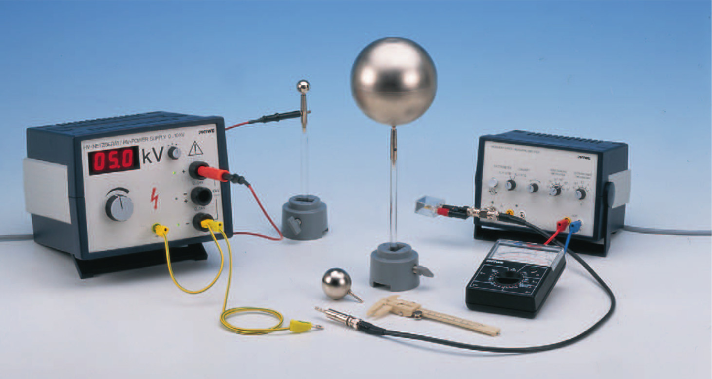
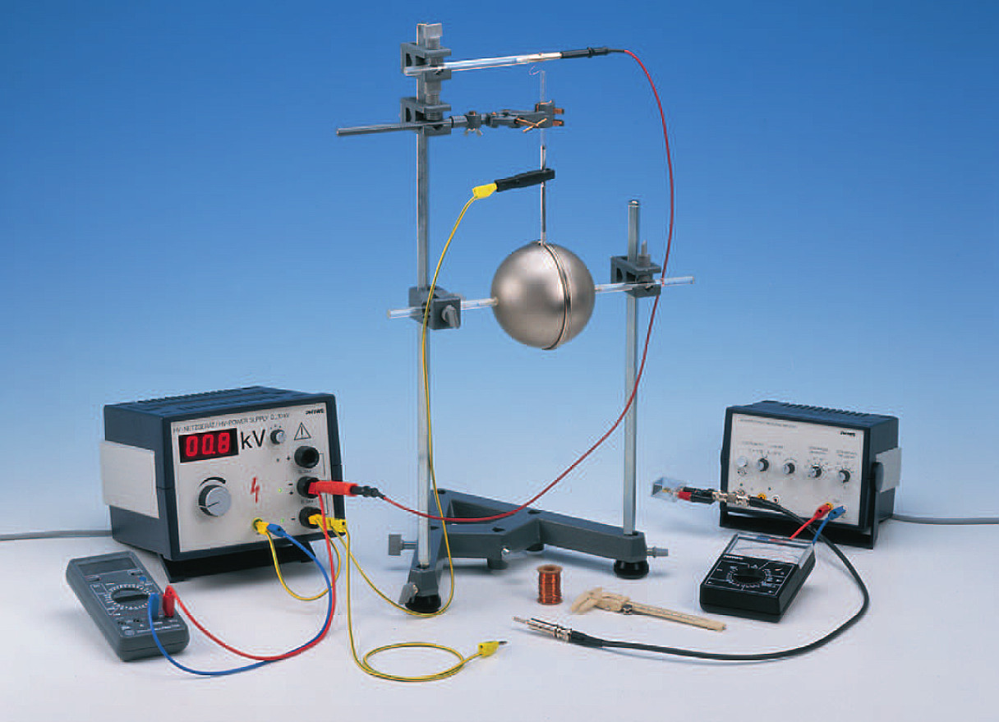
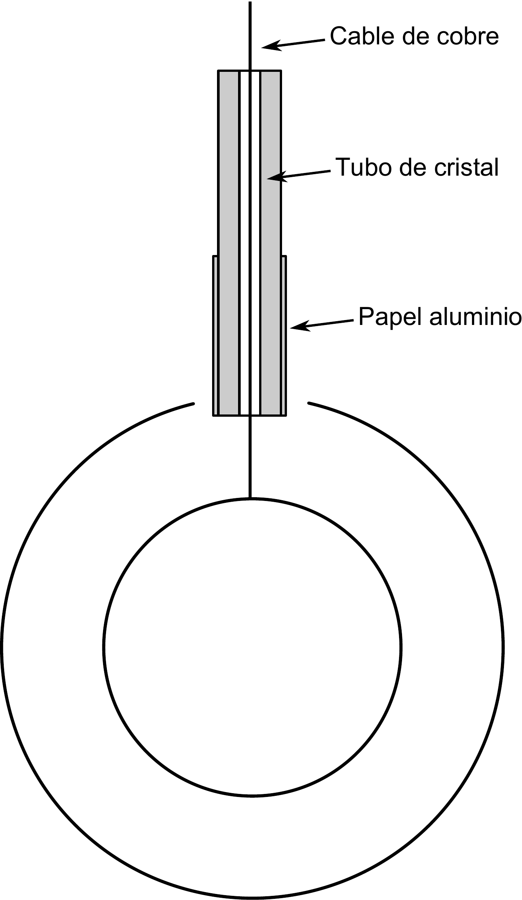

RECOMENDACIÓN IMPORTANTE: ES IMPORTANTE RESPETAR LAS NORMAS DE SEGURIDAD EN ESTA PRÁCTICA. LA RESISTENCIA DE PROTECCIÓN DE 10M DEBE DE ESTAR CONECTADA EN TODAS LAS MEDIDAS.
Se trata de determinar las cargas inducidas en condensadores esféricos sometidos a distintos voltajes. Se deduce la capacidad a partir de la medidas experimentales y se contrastan con los valores teóricos.
La capacidad de un conductor se define como la relación entre su potencial absoluto y la carga almacenada:
Esta relación depende únicamente de la geometría del conductor y es constante para un conductor no deformable. La capacidad de una esfera conductora de radio se puede calcular teóricamente a partir de las leyes de la electroestática:
Cuando se aplica una diferencia de potencial entre dos conductores aparece una carga igual en magnitud pero de signo opuesto en cada uno de los conductores. El conjunto formado por ambos conductores se denomina condensador y lleva asociado una capacidad que relaciona la carga almacenada con la diferencia de potencial entre ambos conductores:
Esta capacidad depende únicamente de los materiales en el espacio alrededor de los conductores y de su geometría (forma, situación en el espacio...).
El conductor esférico pequeño (cm) se coloca sobre un soporte cilíndrico de material aislante y se conecta al polo positivo de la fuente de alto voltaje. Se asocia en serie con el conductor esférico una resistencia de protección de 10 M mientras el polo negativo de la fuente se conecta a tierra. La esfera pequeña se pone en contacto brevemente con las esferas de ensayo para cargar estas últimas. Después de la operación de carga de la esfera de prueba se debe poner la fuente de alto voltaje a 0V. Para cada medida se incrementa en 1000V la tensión de alto voltaje. Antes de ser cargadas de nuevo, las esferas de prueba se descargan poniéndolas en contacto con el cable de conexión a tierra.
La carga eléctrica de las esferas de prueba se determinará mediante un amplificador de medida. Mediante un adaptador banana-BNC se conecta un condensador de nF en paralelo con la entrada de alta impedancia del amplificador. El valor de la capacidad debe de comprobarse con ayuda de un polímetro apto para medir capacidades. La capacidad de los conductores esféricos se determinan a partir de los valores de tensión medidas con ayuda del amplificador.

Figura 7.1: Montaje experimental de la parte 1.
La tensión medida a la salida del amplificador permite determinar la carga de la esfera:
Siendo el condensador auxiliar en paralelo con la entrada del amplificador. Este condensador tiene una capacidad mucho más alta que la capacidad del conductor esférico y por lo tanto:
Por otro lado la carga de la esfera de prueba se puede hallar sabiendo la tensión del alto voltaje :
Haciendo uso de las dos ecuaciones anteriores podemos determinar la capacidad del conductor conociendo la capacidad .
(1,0)250
Medir la capacidad del condensador con el polímetro:
Tomar medidas de la tensión para distintas tensiones de alto voltaje en pasos de 1kV para las esferas metálicas de diámetro cm, cm.
cm | cm | ||
Para determinar la capacidad de un condensador esférico, se modifica el montaje experimental tal como se muestra en la figura 7.2. Los dos hemisferios de Cavendish se juntan para formar una esfera completa con un pequeño orificio circular en la parte superior (ver figura 7.3). Se suspende en el interior una esfera de plástico con superficie conductora mediante un alambre de cobre. El alambre de cobre pasa por el tubo de cristal envuelto en un papel de aluminio para evitar cualquier capacidad parásita. El papel de aluminio no debe tocar los hemisferios.

Figura 7.2: Montaje experimental de la parte 2.
La esfera interior se conecta a la toma central de la fuente de alimentación de alto voltaje. Se usa el cable de alta tensión en serie con la resistencia de protección de 10M. El borne negativo de la fuente se conecta a tierra. Se incrementa la tensión en pasos de 100V sin superar los 1000V para no dañar el multímetro digital.
La carga se determina de forma similar a la primera parte de la práctica. Se desconecta primero la esfera exterior y apagamos la fuente de alto voltaje. Conectamos a continuación la esfera externa al amplificador de medida para determinar la carga. Entre cada medida se debe descargar la esfera externa poniéndola en contacto con el cable de tierra.

Figura 7.3: Detalle del montaje experimental de la parte 2.
Tomar medidas de la tensión del amplificador de medida para distintas tensiones de alto voltaje en pasos de 100V hasta alcanzar los 1000V para el condensador formado por los hemisferios de Cavendish y la esfera interna.